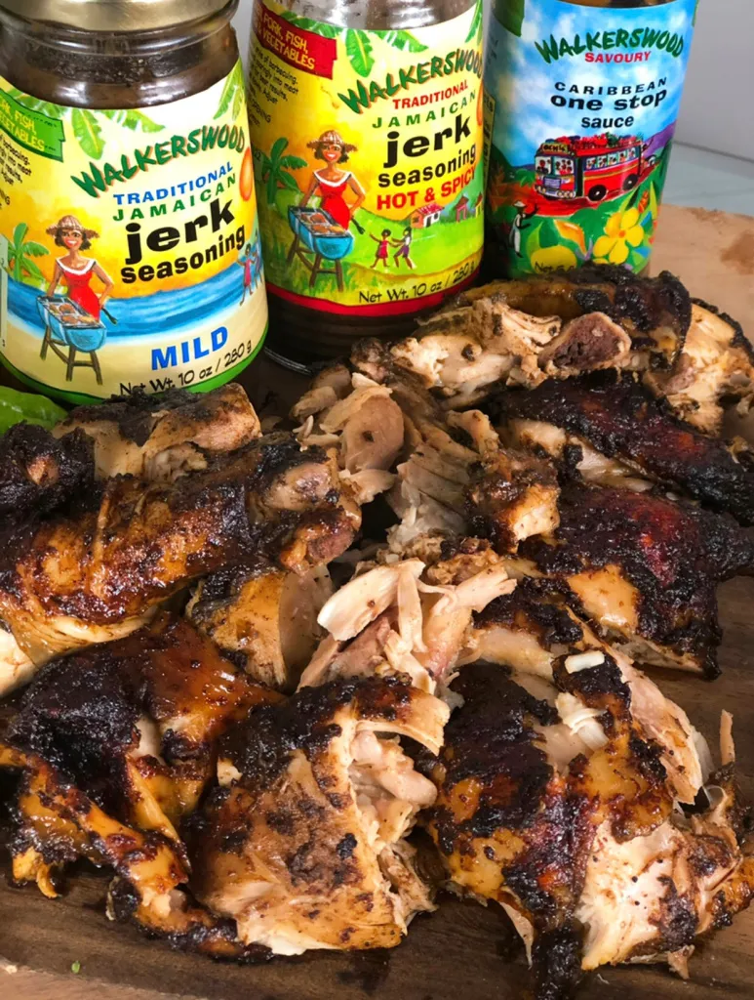
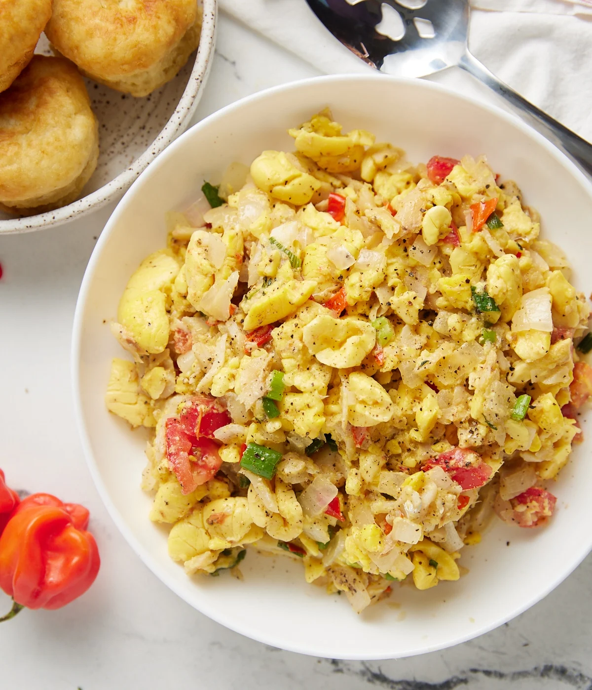
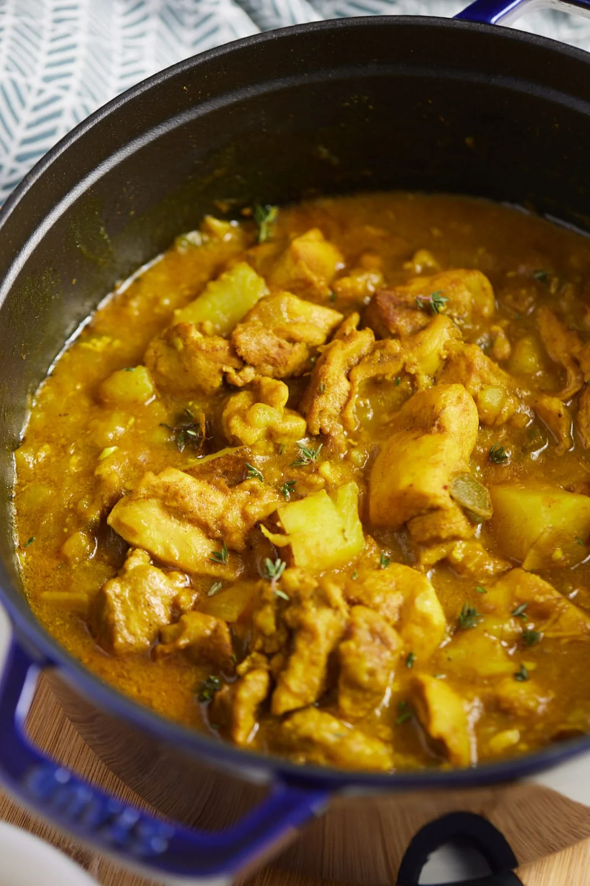
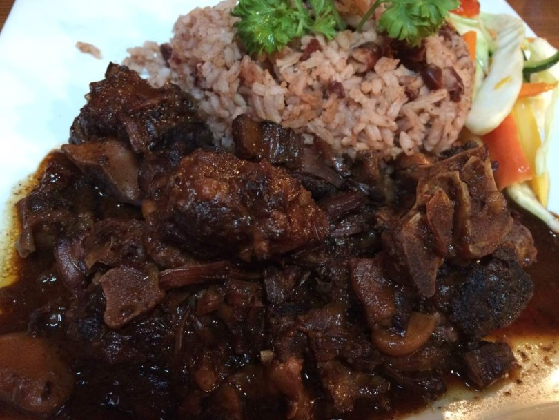
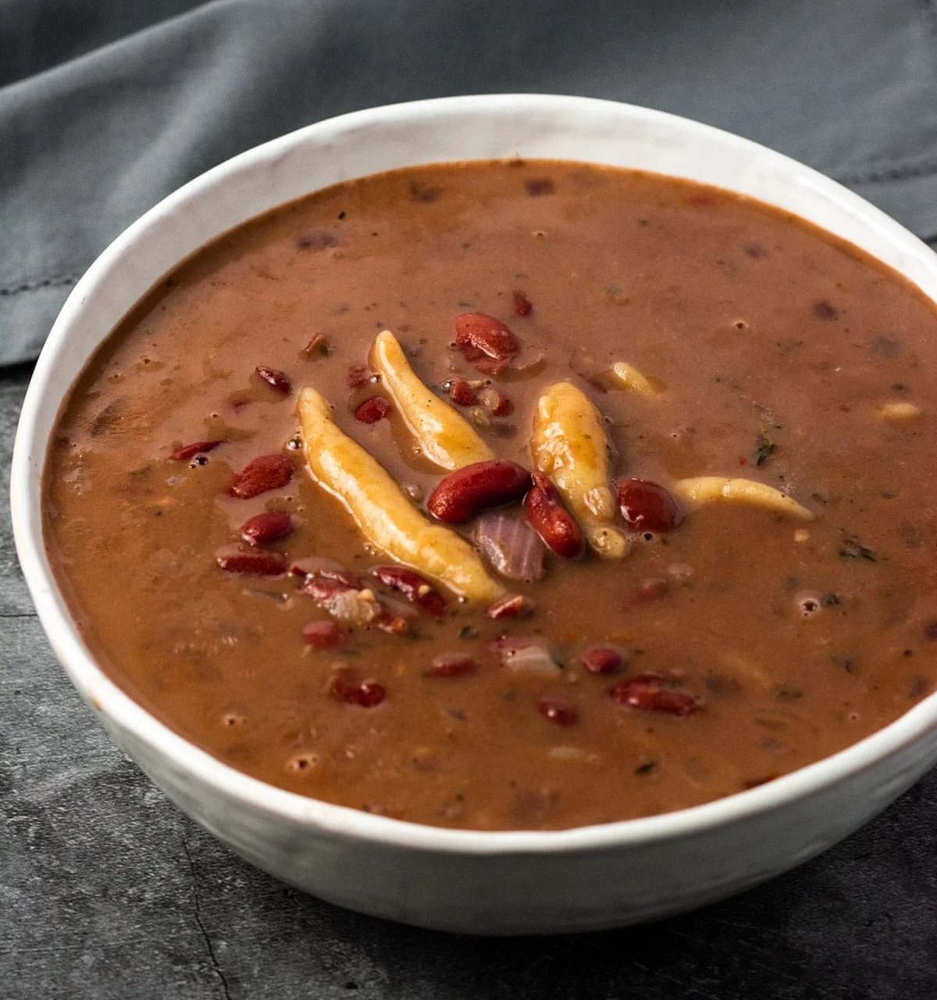
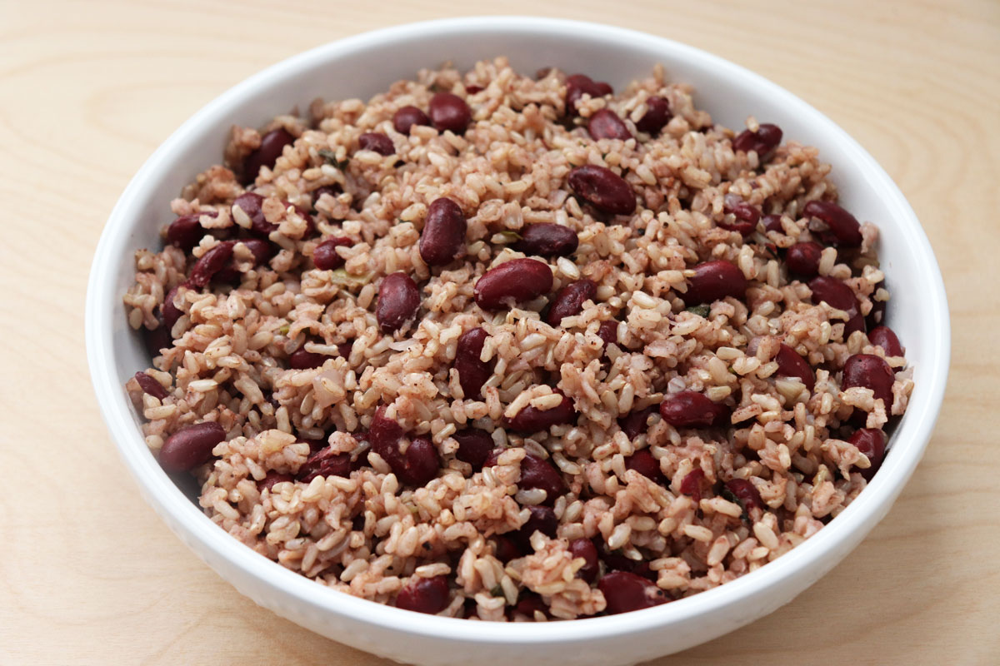
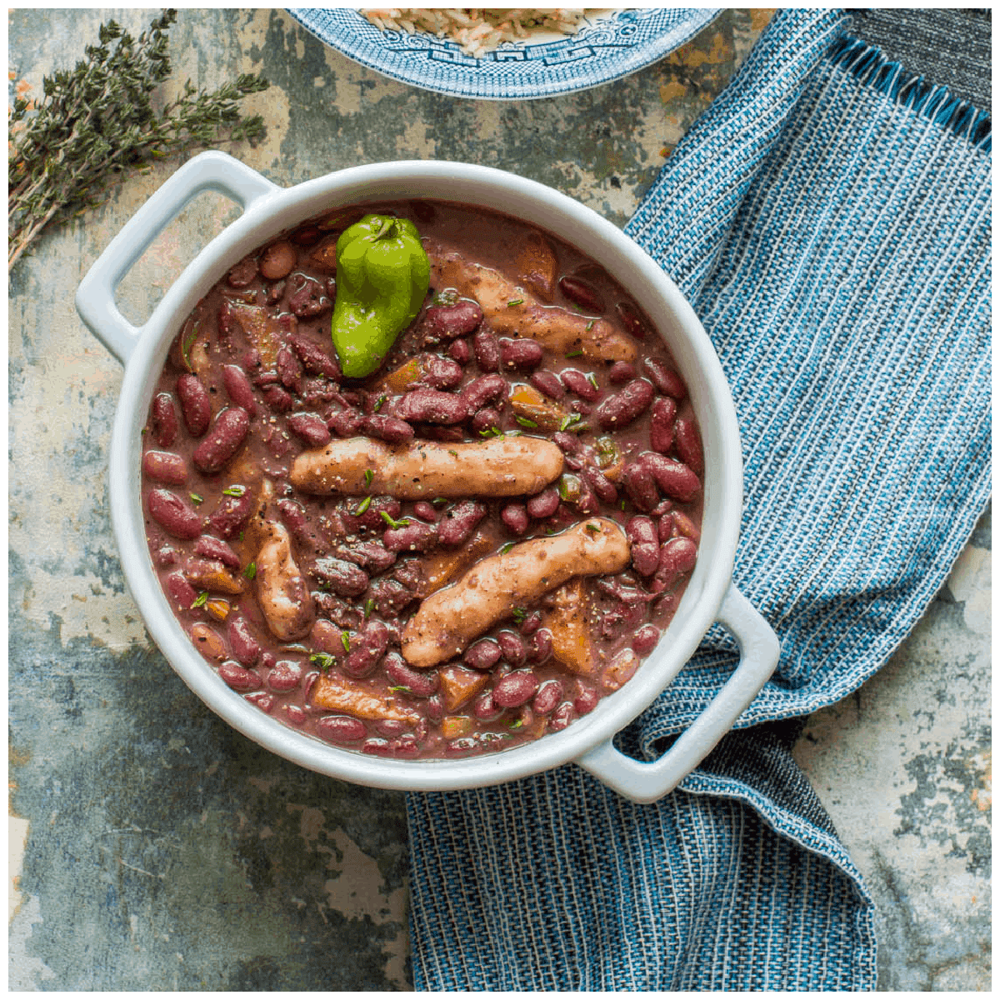
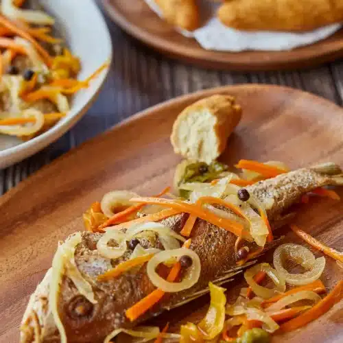
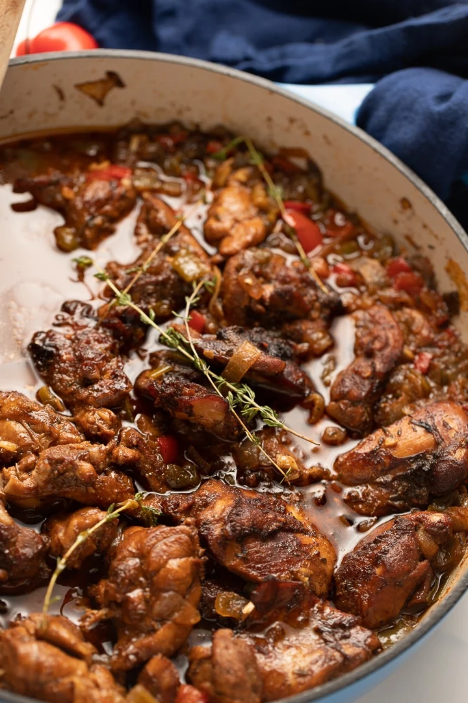
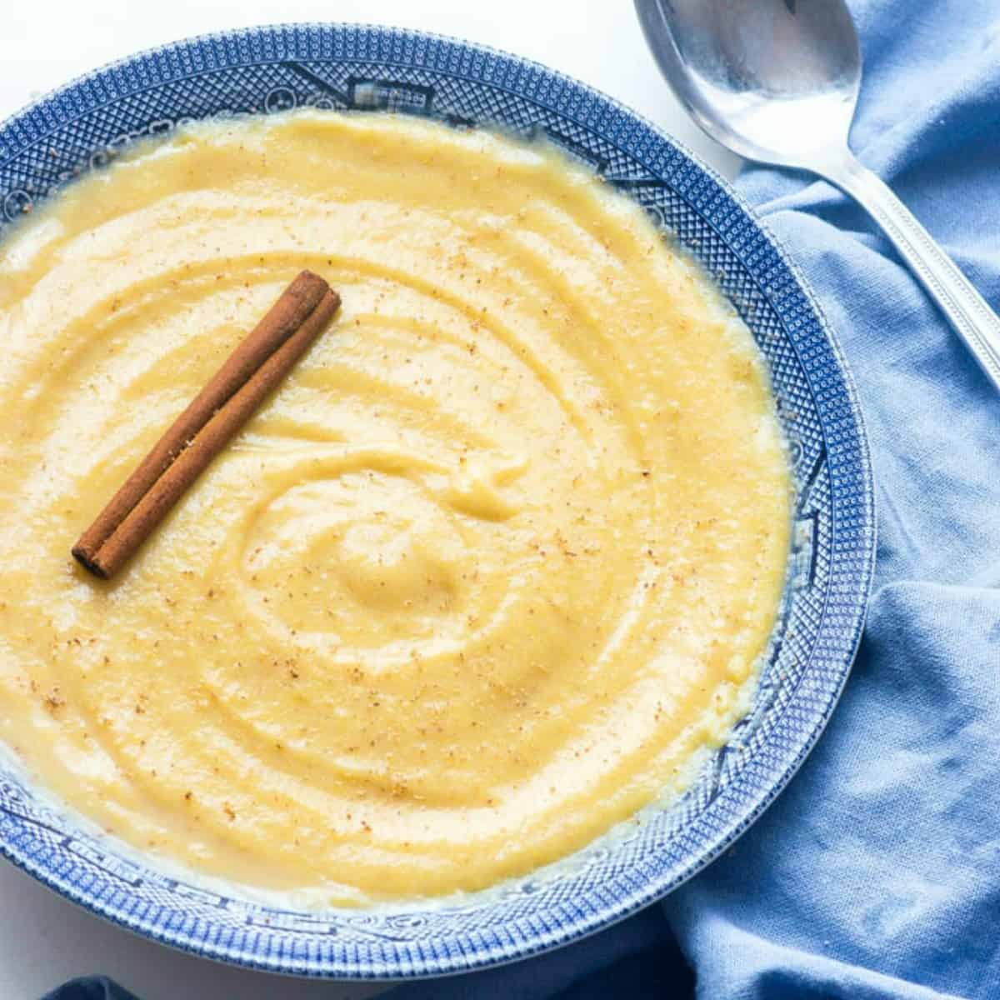

Food!
10 Dishes Every Jamaican Should Know How to Cook
Whether or not you’re a foodie, you certainly do have to spend significant portions of your life eating food. And it certainly adds to your reputation as a Jamaican when you not only know how good food, but you know how to cook them as well. Here are 10 dishes that every Jamaican should be able to prepare.
1. Jerked Chicken and Jerked Pork
Jerk meat dishes are loved everywhere for the spiciness and smoky flavour that many swear are as a result of super secret ingredients in the jerk seasoning. So what are these secret ingredients? Most likely allspice – a spicy seasoning made from dried pimento berries, scotch bonnet pepper, onion, thyme and ginger. If you’re aiming for the authentic jerk taste, allow the meat to marinate in sauce made from the spices, and then slow cook on a grill with pimento wood. And that’s real Jamaican jerk! However, if you’re using the oven you may also want to add bottled jerk sauce to your list of ingredients and forget about the pimento wood.
2. Ackee and Saltfish
Ackee and saltfish is an easy-to-prepare dish that’s quite sumptuous and gaining fans beyond the country’s borders. As the country’s national dish – every Jamaican should know how to prepare it. The saltfish is put to soak hours before preparation to remove excess sale. When it’s cooking time, the saltfish and ackee are washed and boiled separately. When boiled to satisfaction, the saltfish is de-boned, flaked, and sautéed in onions, scallion, thyme and black pepper, then combined with the ackee for one of the most heavenly creations ever to grace the tastebuds.
3. Curried chicken and Curried goat
Succulent and juicy to the bone, curry chicken and curry goat are two very popular dishes at many Jamaican gatherings. Jamaicans have developed a special love for curry! You’ll need curry, garlic, allspice, thyme, scotch bonnet pepper, black pepper and vinegar. The meat whether chicken or goat is first seasoned with the spices and allowed to marinate. The next crucial step is what Jamaicans call, “burning the curry’ which involves heating the oil with curry powder until the colour starts to change. Finally the meat is added and allowed to slowly simmer until tender and cooked to perfection.
4. Oxtail
This belly-filling dish can be found at almost every Jamaican restaurant. But for cooking this dish at home, you first need an ounce of patience – cooking may take an hour and a half or even longer. To get the taste just right, the meat is fried on high heat until both sides are a dark brown colour. (Some persons skip this stage and just add browning during cooking.) Then, the oxtail meat is cooked in a pressure cooker for 20-30 minutes until the desired softness is reached. The pot is then seasoned with local herbs and spices along with carrots and optional butter beans and simmers until the sauce is thickened.
5. Red Peas Soup
Red peas soup is a delicious hot soup that is sold all over the island. However, the best bowl of soup is the one you make at home. It uses mostly the same ingredients as other soups with the exception of a healthy dose of red kidney beans which give the dish its unique flavour and colour. Some cooks swear that red peas soup could never be complete without a small addition of pigtails, however, others insist it is just as tasty without it. A bowl of red soup is especially welcomed when it is raining.
6. Rice and Peas
Rice and peas is a part of the traditional Sunday dinner and is also widely served across the island in a number of restaurants any day of the week. Most often, red kidney beans are used. They are boiled until soft, then coconut milk, salt and herbs are added and cooked for another 15-20 minutes. The rice is added to the pot last, after which it is covered and allowed to steam over a very low heat until the rice is cooked. Any Jamaican cooking authentic rice and peas will never leave out coconut milk and green scotch bonnet pepper which gives the dish its distinctive delectable flavour.
7. Stew peas
Cooking up a peas stew is very popular- and personal preference may influence what meat gets added to the pot. Beef and pigtails are common for the stew and sometimes the stew is had without meat. A generous portion of red kidney beans is necessary for this dish and is boiled until slightly cooked. The meat is then added and the pot seasoned until its desired saucy taste is achieved. To add extra flavour, add some coconut milk and of course ‘spinners’ – those tiny flour rolls that seem to bring something indescribably delicious to this dish. Jamaicans like to enjoy stew peas with plain white rice.
8. Escoveitched fish
This seafood dish is a favourite for fish lovers, and is also commonly eaten at Easter time. Using sliced fish is common, but persons are not restricted to one type of fish. To ‘escoveitch’ the fish, you first need to season with salt and pepper, then fry until golden brown. Vinegar, scotch bonnet pepper and onions are generally used to make the sauce in which the fish will marinate until ready to serve. Escoveitched fish is served laden with the remnants of its marinade, which often includes a generous serving of the carrots, onions and peppers.
9. Brown stew chicken
Brown stew chicken is a popular dish because it is easy to cook and you don’t need to have great cooking skills to get it right. The chicken is cut into small bite size pieces and then browned. Browning is done by frying the chicken for a short time which is essential since the dish was named ‘brown stew’ because of its characteristic colour. However, some Jamaicans skip this step by adding Jamaican browning or caramel sauce. The chicken is then simmered in local herbs and spices until the gravy is thickened. The delicious dish is often completed with finely chopped boiled potatoes, yam, bananas and boiled dumplings.
10. Cornmeal porridge
Many Jamaicans believe cornmeal porridge is the ultimate food to “build up” the body. Some homes traditionally prepare cornmeal porridge as a breakfast meal as it is said to boost strength. The widely eaten porridge is very easy-to-prepare. As the name suggests, cornmeal is the key ingredient which is slow cooked and flavoured with milk, nutmeg, cinnamon and vanilla, then sweetened to taste. The porridge is usually served hot with a generous slice of bread and butter, but tastes just as good by itself.
